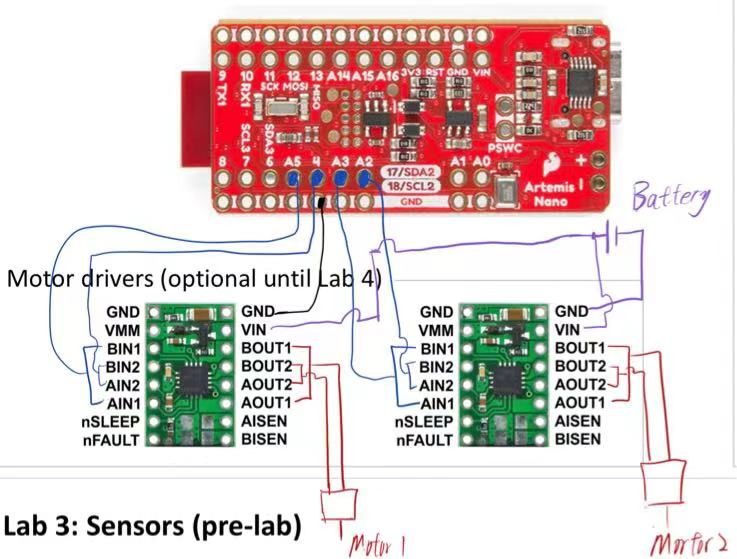
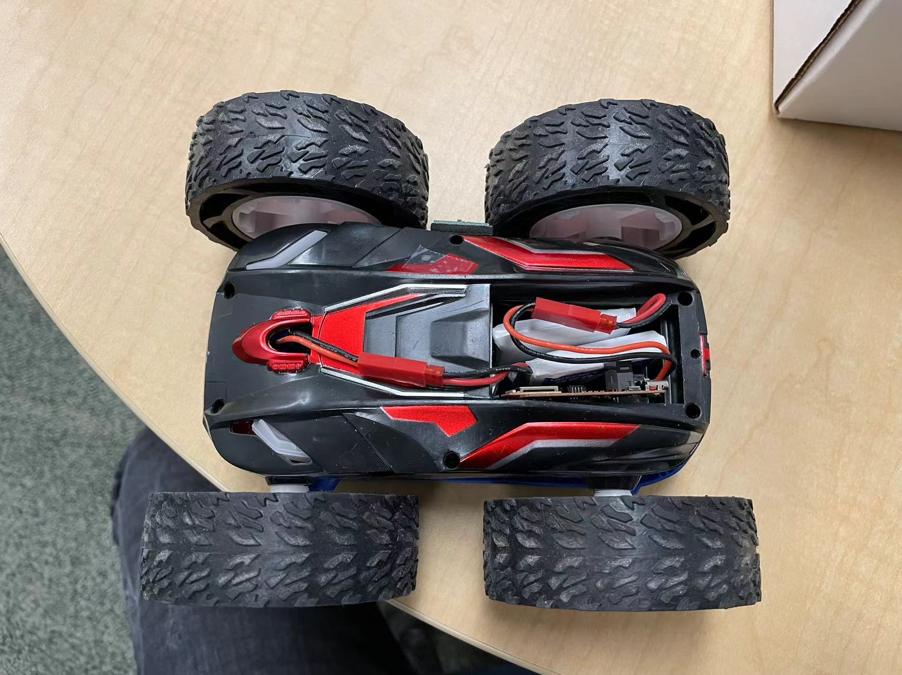
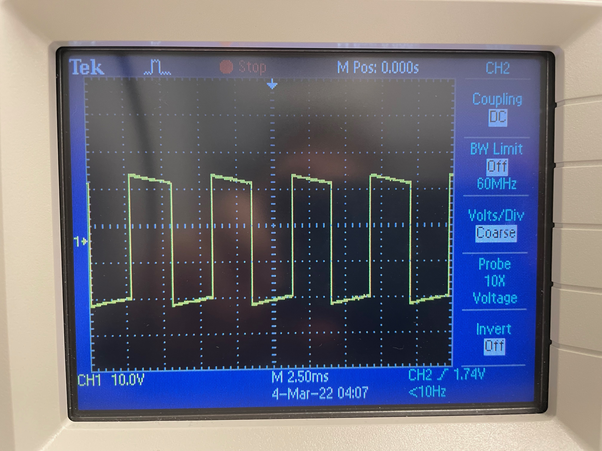
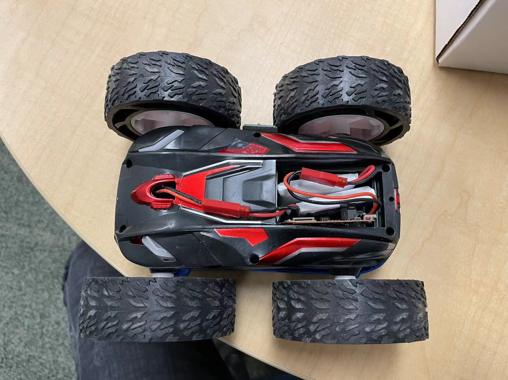
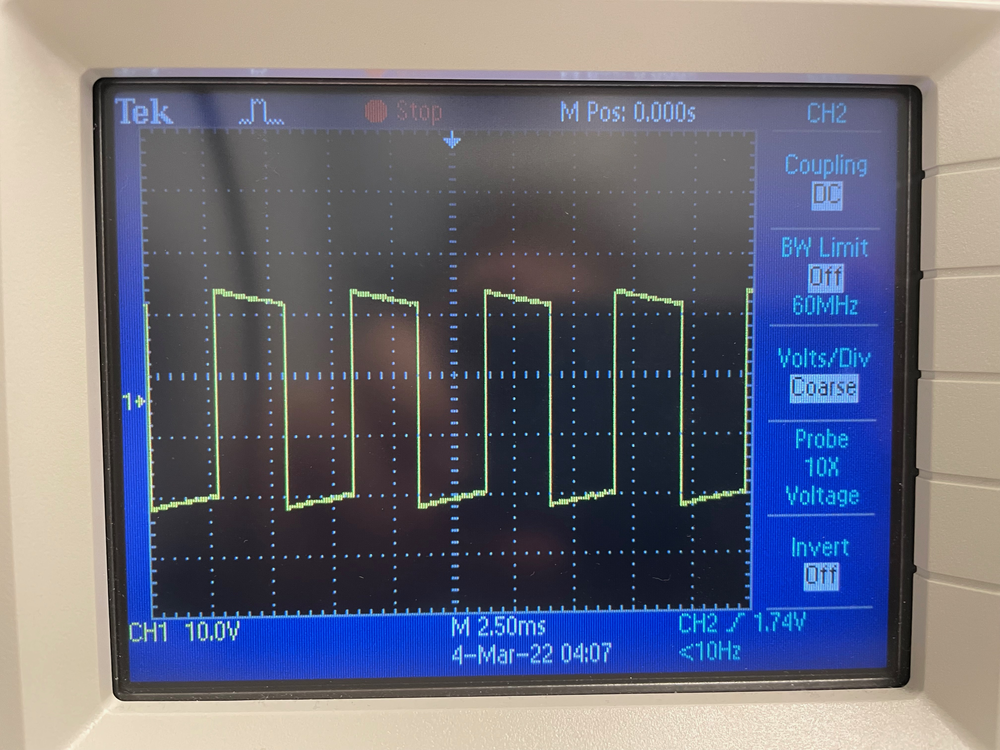
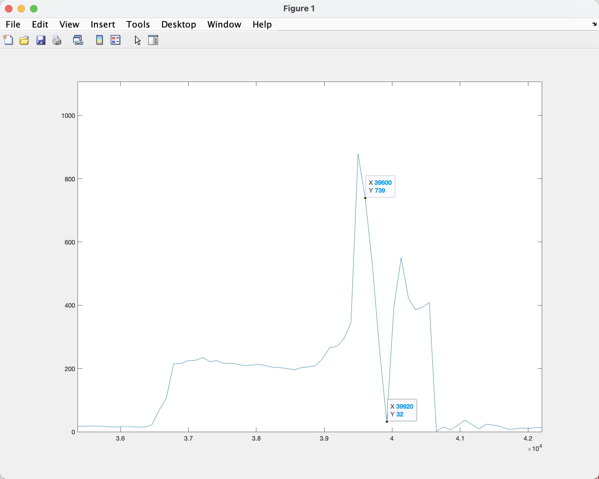

Lab 5 Report
In this lab, obejective is to solder and connect the motor driver to the Artemis board so we can control the car's speed and direction. Also to implement more complex control algorithms. And to add power to the motor driver, we use two channels for each driver so we get enough juice for it to run. Connection diagram shown in Fig.1.

Fig.1 Motor Driver Connection Diagram
And another objective is to setup the car, to have the two TOF sensors and one IMU sensor fixed on the cart, and make sure it wouldn't fall out while running. Result shown in Fig.2 ~ Fig.4.
 Fig.2 Car Interior
Fig.2 Car Interior
 Fig.3 Car Undercaridge

Fig.4 Car Roof
Porcedure
For the procedure, I kind of jumped the steps. I soldered everything and started follow the steps. But everything went well...Thankfully.
1. The reasonable power supply setting is around 6V.
2. PWM Step signal shown in Fig.5

Fig.5 PWM generated by Artemis
Tasks
1. I found the left driver moves when PWM settings are at 35/255, and right driver is at around 45/255. But one thing bothers is that the left motor moves and stops sooner than the right motor. Code snippet below.
Fig.3 Car Undercaridge

Fig.4 Car Roof
Porcedure
For the procedure, I kind of jumped the steps. I soldered everything and started follow the steps. But everything went well...Thankfully.
1. The reasonable power supply setting is around 6V.
2. PWM Step signal shown in Fig.5

Fig.5 PWM generated by Artemis
Tasks
1. I found the left driver moves when PWM settings are at 35/255, and right driver is at around 45/255. But one thing bothers is that the left motor moves and stops sooner than the right motor. Code snippet below.
void forward(uint8_t v){
analogWrite(LEFT2, 0.74*v);
analogWrite(LEFT1, 0);
analogWrite(RIGHT2, 0);
analogWrite(RIGHT1, v);
}
2. From below video, you can see that it can move in fairly straight line, I set the Left motor to be 0.74 of the power given to the right motor. Same code as above.
3. For this part I chained a series of action, demonstarted in video below.
void loop() {
// put your main code here, to run repeatedly:
forward(150);
delay(1000);
idle();
delay(1000);
clockWise(250,250);
delay(1000);
idle();
delay(1000);
backward(150);
delay(1000);
idle();
delay(1000);
counterClockWise(250,100);
delay(1000);
idle();
delay(1000);
}
Tasks 5960
1. The frequency is 590 Hz from the data sheet. I think this is a high enough frequency for the PWM. A benefit to boost it may be to have more accurate control on the motor. So it responds more sharply. But I doubt 590 Hz isn't enough.
2. For this section, it has a bit of challenge. Because the space is not large enough for the car to ramp up the top speed. If done in a fast pace, it's hard to see the ramp up and down in speed. I chose a time of 2 seconds for the robot to ramp up from 0 to 255. And the TOF is not fast enough to get a more detailed data points. My best result shown in Fig.6. The top Speed is at around 2.22 m/s.

Fig.6 Ramp Up Speed diagram
Here I generated a steady ramp up speed, ranging the power sent to the PWM duty cycle from 0 to 255 and 255 to 0 in velocity_interval, where it is 2 second. And the benefit of using millis() as the variable is that it is invariant to TOF sensor reading delay, so the rate can always be inrespect to time instead of CPU cycle.
t = (millis()%(velocity_interval*1000*2))/1000.0;
if (t < velocity_interval){
speedd = 255/velocity_interval*t;
}
else{
speedd = -255/velocity_interval*t+510;
}
forward(speedd);